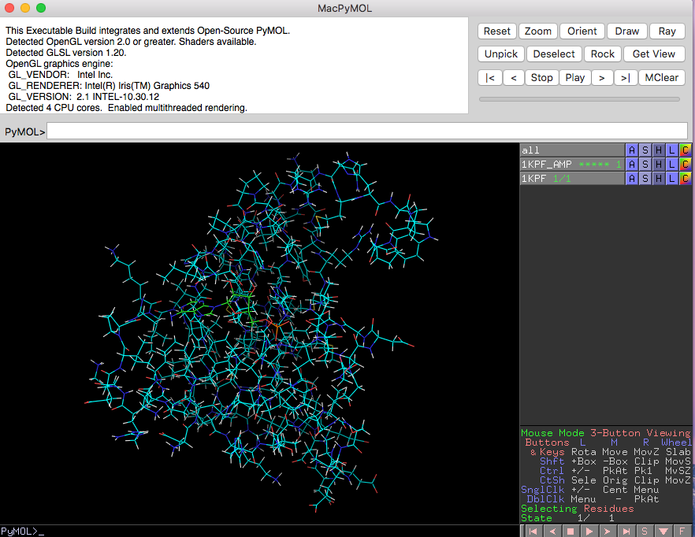
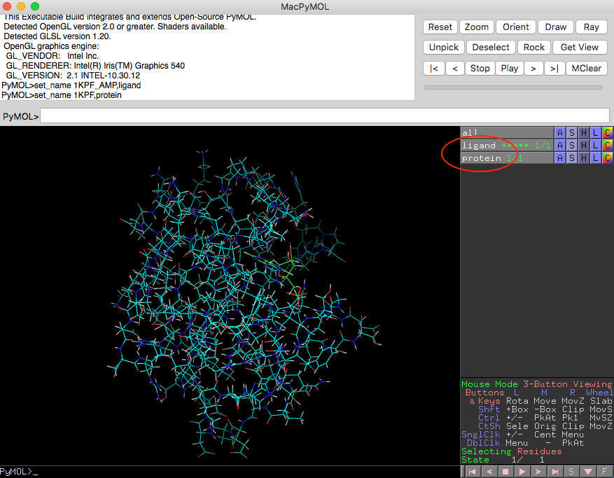
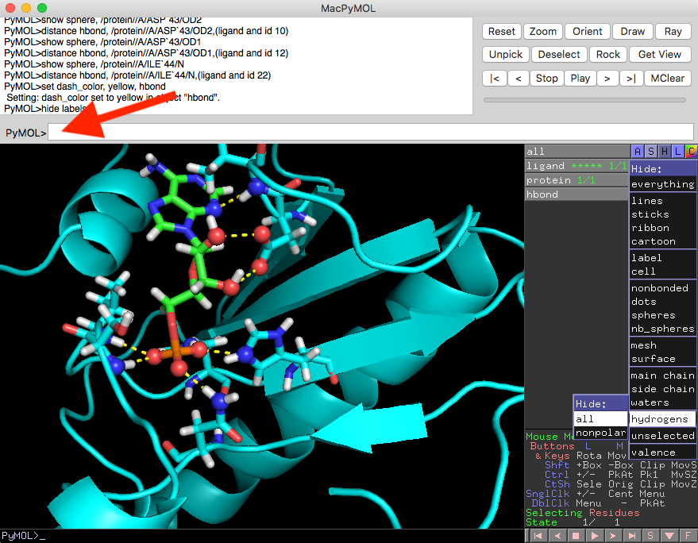

User Guide
Visualization Hydrogen Bonds in PyMOL
Visualizing H-bonds identified via Hbind is a 3-step process:
- Generating an Hbind interaction table
- Creating the PyMOL visualization commands via HbindViz' hbind_pymol_cmds.py Python script
- Executing the generated PyMOL commands to visualize hydrogen-bonds in PyMOL
Step 1: Generating an Hbind interaction table
First, an Hbind interaction table that lists the hydrogen bond interactions between a protein and its ligand has to be generated. The Hbind open source software is available at https://github.com/psa-lab/Hbind.
Once you have it installed, you can execute the following command based on the two example files provided in the ./example_files subdirectory (the structure of an PKCI-substrate analog with its ligand, adenosine monophsophate):
hbind -p ./example_files/1KPF.pdb -l ./example_files/1KPF_AMP.mol2
After executing the command above, you should see the following output in your terminal:
HBIND Version: 1.0.0
Documentation: http://psa-lab.github.io/hbind
Raschka, Wolf, Bemister-Buffington, Kuhn (2018)
Protein Structure and Analysis Lab, MSU (http://kuhnlab.bmb.msu.edu)
Ligand file: /Users/sebastian/code/hbind/example_files/1KPF_AMP.mol2
Protein file: /Users/sebastian/code/hbind/example_files/1KPF.pdb
++++++++++++++++++++++++++++++++ HBind Interaction Table ++++++++++++++++++++++++++++++++
# | Ligand Atom -- Protein Atom | Bond D-H-A Ligand-Protein
# | # TYPE -- RES CH_ID RES_NO A_TYPE | DIST. ANGLE INTERACTION
| hbond 1 2 O.2 -- ASN A 99 ND2 2.911 174.0 Acceptor - Donor
| hbond 2 3 O.3 -- SER A 107 N 2.802 166.8 Acceptor - Donor
| hbond 3 3 O.3 -- VAL A 108 N 3.031 178.8 Acceptor - Donor
| hbond 4 4 O.3 -- HIS A 112 NE2 2.593 163.1 Acceptor - Donor
| hbond 5 4 O.3 -- HIS A 114 NE2 2.581 140.4 Acceptor - Donor
| hbond 6 10 O.3 -- ASP A 43 OD2 2.714 167.1 Donor - Acceptor
| hbond 7 12 O.3 -- ASP A 43 OD1 2.607 154.1 Donor - Acceptor
| hbond 8 22 N.ar -- ILE A 44 N 3.156 154.9 Acceptor - Donor
Save this output to a simple text file (an example is available at ./example_files/hbind_output.txt)
Step 2: Creating the PyMOL visualization commands via HbindViz' hbind_pymol_cmds.py Python script
No installation is required to run the hbind_pymol_cmds.py Python script included in this directory. (Python 3.6 or greater is recommended.)
Once you have generated the Hbind interaction table (an example is available at ./example_files/hbind_output.txt), you can execute the following command to generate the PyMOL commands for visualizing the protein-ligand hydrogen-bond interaction network:
python code/hbind_pymol_cmds.py example_files/hbind_output.txt
The execution of the previous command should return the following output in your terminal:
hide lines
show cartoon
show sticks, ligand
set sphere_scale=0.32
show sticks, (protein and chain A and resi 43)
show sticks, (protein and chain A and resi 44)
show sticks, (protein and chain A and resi 112)
show sticks, (protein and chain A and resi 114)
show sticks, (protein and chain A and resi 99)
show sticks, (protein and chain A and resi 108)
show sticks, (protein and chain A and resi 107)
show sphere, (ligand and id 22)
show sphere, (ligand and id 10)
show sphere, (ligand and id 4)
show sphere, (ligand and id 12)
show sphere, (ligand and id 3)
show sphere, (ligand and id 2)
show sphere, /protein//A/ASN`99/ND2
distance hbond, /protein//A/ASN`99/ND2,(ligand and id 2)
show sphere, /protein//A/SER`107/N
distance hbond, /protein//A/SER`107/N,(ligand and id 3)
show sphere, /protein//A/VAL`108/N
distance hbond, /protein//A/VAL`108/N,(ligand and id 3)
show sphere, /protein//A/HIS`112/NE2
distance hbond, /protein//A/HIS`112/NE2,(ligand and id 4)
show sphere, /protein//A/HIS`114/NE2
distance hbond, /protein//A/HIS`114/NE2,(ligand and id 4)
show sphere, /protein//A/ASP`43/OD2
distance hbond, /protein//A/ASP`43/OD2,(ligand and id 10)
show sphere, /protein//A/ASP`43/OD1
distance hbond, /protein//A/ASP`43/OD1,(ligand and id 12)
show sphere, /protein//A/ILE`44/N
distance hbond, /protein//A/ILE`44/N,(ligand and id 22)
set dash_color, yellow, hbond
hide labels
Tip:
If you are using a Linux/Unix terminal, you can redirect the outputs from Hbind or hbind_pymol_cmds.py to text files so that you don't need to copy it manually from the terminal. For example, the command for the redirect to my_output.txt would be as follows:
python code/hbind_pymol_cmds.py example_files/hbind_output.txt > my_output.txt
Step 3: Executing the generated PyMOL commands to visualize hydrogen-bonds in PyMOL
After obtaining the commands for creating the H-bond visualization in PyMOL (see Step 2), open the protein and ligand structures in PyMOL:

Next, rename the protein structure (here: "1KPF") to "protein" and the ligand structure (here: "1KPF_AMP") to "ligand" as shown in the screenshot below:

Finally, copy and paste the commands from Step 2 into the PyMOL command prompt and hit enter to see the hydrogen bonds visualized:

(Note that the Hbind table only lists the heavy atoms that participate in hydrogen bond interactions; thus, hydrogen positions are ignored in the HbondViz script, and you may want to hide these in PyMOL.)